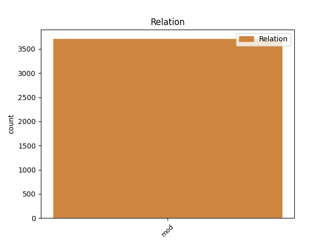
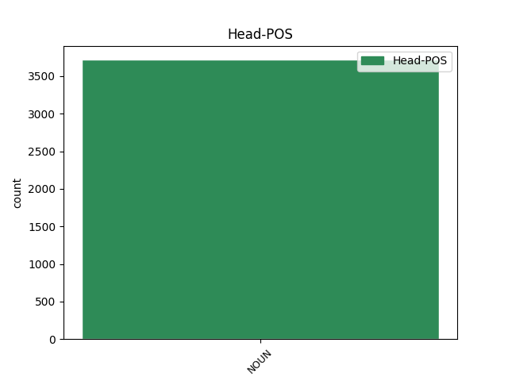
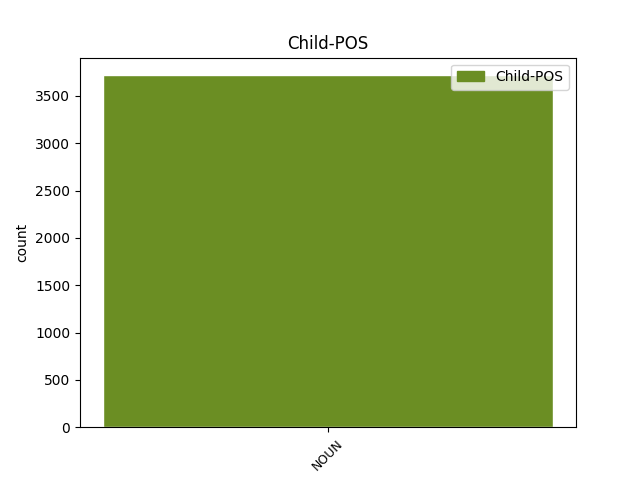

Distribution of features within this leaf



Agreement Rules sorted by frequency.
- When the dependent token is the modifer(mod) of the head token, and the head token is NOUN and the dependent token is NOUN.
1 Care _ _ _ _ 0 _ _ _
2 s _ _ _ _ 0 _ _ _
3 -au _ _ _ _ 0 _ _ _
4 întărit _ _ _ _ 0 _ _ _
5 și _ _ _ _ 0 _ _ _
6 de _ _ _ _ 0 _ _ _
7 Domnia _ _ _ _ 0 _ _ _
8 mea _ _ _ _ 0 _ _ _
9 legiuindu _ _ _ _ 0 _ _ _
10 -să _ _ _ _ 0 _ _ _
11 și _ _ _ _ 0 _ _ _
12 aceaste _ _ _ _ 0 _ _ _
13 Ponturi _ _ _ _ 0 _ _ _
14 , _ _ _ _ 0 _ _ _
15 adăogat _ _ _ _ 0 _ _ _
16 în _ _ _ _ 0 _ _ _
17 pravela _ _ _ _ 0 _ _ _
18 pămîntului _ _ _ _ 0 _ _ _
19 , _ _ _ _ 0 _ _ _
20 supt _ _ _ _ 0 _ _ _
21 peceatea pecete NOUN Ncfsry Case=Acc,Nom|Definite=Def|Gender=Fem|Number=Sing 0 _ _ _
22 Domnii domnie NOUN Ncfsoy Case=Dat,Gen|Definite=Def|Gender=Fem|Number=Sing 21 mod _ ref=COMPLETARE.10
23 meale _ _ _ _ 0 _ _ _
24 precum _ _ _ _ 0 _ _ _
25 să _ _ _ _ 0 _ _ _
26 arată _ _ _ _ 0 _ _ _
27 mai _ _ _ _ 0 _ _ _
28 sus _ _ _ _ 0 _ _ _
29 , _ _ _ _ 0 _ _ _
30 care _ _ _ _ 0 _ _ _
31 s _ _ _ _ 0 _ _ _
32 -au _ _ _ _ 0 _ _ _
33 și _ _ _ _ 0 _ _ _
34 publicarisit _ _ _ _ 0 _ _ _
35 prin _ _ _ _ 0 _ _ _
36 toate _ _ _ _ 0 _ _ _
37 Judecătoriile _ _ _ _ 0 _ _ _
38 din _ _ _ _ 0 _ _ _
39 Domneasca _ _ _ _ 0 _ _ _
40 noastră _ _ _ _ 0 _ _ _
41 Ţară _ _ _ _ 0 _ _ _
42 , _ _ _ _ 0 _ _ _
43 și _ _ _ _ 0 _ _ _
44 cătră _ _ _ _ 0 _ _ _
45 toți _ _ _ _ 0 _ _ _
46 lăcuitorii _ _ _ _ 0 _ _ _
47 de _ _ _ _ 0 _ _ _
48 obște _ _ _ _ 0 _ _ _
49 ca _ _ _ _ 0 _ _ _
50 să _ _ _ _ 0 _ _ _
51 fie _ _ _ _ 0 _ _ _
52 știute _ _ _ _ 0 _ _ _
53 și _ _ _ _ 0 _ _ _
54 să _ _ _ _ 0 _ _ _
55 se _ _ _ _ 0 _ _ _
56 urmeaze _ _ _ _ 0 _ _ _
57 făr _ _ _ _ 0 _ _ _
58 de _ _ _ _ 0 _ _ _
59 strămutare _ _ _ _ 0 _ _ _
60 . _ _ _ _ 0 _ _ _
Disagree Examples:
1 Și _ _ _ _ 0 _ _ _
2 deaca _ _ _ _ 0 _ _ _
3 -l _ _ _ _ 0 _ _ _
4 samănă _ _ _ _ 0 _ _ _
5 , _ _ _ _ 0 _ _ _
6 creaște _ _ _ _ 0 _ _ _
7 și _ _ _ _ 0 _ _ _
8 să _ _ _ _ 0 _ _ _
9 face _ _ _ _ 0 _ _ _
10 mai _ _ _ _ 0 _ _ _
11 mare _ _ _ _ 0 _ _ _
12 de _ _ _ _ 0 _ _ _
13 toate _ _ _ _ 0 _ _ _
14 buruianele _ _ _ _ 0 _ _ _
15 și _ _ _ _ 0 _ _ _
16 face _ _ _ _ 0 _ _ _
17 stîlpări _ _ _ _ 0 _ _ _
18 mari _ _ _ _ 0 _ _ _
19 , _ _ _ _ 0 _ _ _
20 cît _ _ _ _ 0 _ _ _
21 pot _ _ _ _ 0 _ _ _
22 , _ _ _ _ 0 _ _ _
23 supt _ _ _ _ 0 _ _ _
24 umbra _ _ _ _ 0 _ _ _
25 lui _ _ _ _ 0 _ _ _
26 , _ _ _ _ 0 _ _ _
27 păsările pasăre NOUN Ncfpry Case=Acc,Nom|Definite=Def|Gender=Fem|Number=Plur 0 _ _ _
28 ceriului cer NOUN Ncmsoy Case=Dat,Gen|Definite=Def|Gender=Masc|Number=Sing 27 mod _ ref=MARC4.32
29 să _ _ _ _ 0 _ _ _
30 sălășuiască _ _ _ _ 0 _ _ _
31 . _ _ _ _ 0 _ _ _
1 Și _ _ _ _ 0 _ _ _
2 veniră _ _ _ _ 0 _ _ _
3 în _ _ _ _ 0 _ _ _
4 ceaia _ _ _ _ 0 _ _ _
5 parte _ _ _ _ 0 _ _ _
6 de _ _ _ _ 0 _ _ _
7 mare _ _ _ _ 0 _ _ _
8 în _ _ _ _ 0 _ _ _
9 laturea latură NOUN Ncfsry Case=Acc,Nom|Definite=Def|Gender=Fem|Number=Sing 0 _ _ _
10 gadarineanilor gadarinean NOUN Ncmpoy Case=Dat,Gen|Definite=Def|Gender=Masc|Number=Plur 9 mod _ ref=MARC5.1|SpaceAfter=No
11 . _ _ _ _ 0 _ _ _
1 Și _ _ _ _ 0 _ _ _
2 iaca _ _ _ _ 0 _ _ _
3 veni _ _ _ _ 0 _ _ _
4 unul _ _ _ _ 0 _ _ _
5 den _ _ _ _ 0 _ _ _
6 mai _ _ _ _ 0 _ _ _
7 marii marii NOUN Ncmpry Case=Acc,Nom|Definite=Def|Gender=Masc|Number=Plur 0 _ _ _
8 sinagoghei sinagogă NOUN Ncfsoy Case=Dat,Gen|Definite=Def|Gender=Fem|Number=Sing 7 mod _ ref=MARC5.22
9 ( _ _ _ _ 0 _ _ _
10 a _ _ _ _ 0 _ _ _
11 săborului _ _ _ _ 0 _ _ _
12 ) _ _ _ _ 0 _ _ _
13 , _ _ _ _ 0 _ _ _
14 numele _ _ _ _ 0 _ _ _
15 -i _ _ _ _ 0 _ _ _
16 Iair _ _ _ _ 0 _ _ _
17 , _ _ _ _ 0 _ _ _
18 și _ _ _ _ 0 _ _ _
19 văzîndu _ _ _ _ 0 _ _ _
20 -l _ _ _ _ 0 _ _ _
21 pre _ _ _ _ 0 _ _ _
22 El _ _ _ _ 0 _ _ _
23 , _ _ _ _ 0 _ _ _
24 căzu _ _ _ _ 0 _ _ _
25 cătră _ _ _ _ 0 _ _ _
26 picioarele _ _ _ _ 0 _ _ _
27 Lui _ _ _ _ 0 _ _ _
28 . _ _ _ _ 0 _ _ _
1 Încă _ _ _ _ 0 _ _ _
2 grăind _ _ _ _ 0 _ _ _
3 El _ _ _ _ 0 _ _ _
4 , _ _ _ _ 0 _ _ _
5 veniră _ _ _ _ 0 _ _ _
6 unii _ _ _ _ 0 _ _ _
7 de _ _ _ _ 0 _ _ _
8 la _ _ _ _ 0 _ _ _
9 mai _ _ _ _ 0 _ _ _
10 marele mare NOUN Ncmsry Case=Acc,Nom|Definite=Def|Gender=Masc|Number=Sing 0 _ _ _
11 sinagoghii sinagogă NOUN Ncfsoy Case=Dat,Gen|Definite=Def|Gender=Fem|Number=Sing 10 mod _ ref=MARC5.35|SpaceAfter=No
12 , _ _ _ _ 0 _ _ _
13 zicînd _ _ _ _ 0 _ _ _
14 că _ _ _ _ 0 _ _ _
15 : _ _ _ _ 0 _ _ _
16 Fata _ _ _ _ 0 _ _ _
17 ta _ _ _ _ 0 _ _ _
18 au _ _ _ _ 0 _ _ _
19 murit _ _ _ _ 0 _ _ _
20 ; _ _ _ _ 0 _ _ _
21 Derept _ _ _ _ 0 _ _ _
22 ce _ _ _ _ 0 _ _ _
23 ustenești _ _ _ _ 0 _ _ _
24 Învățătoriul _ _ _ _ 0 _ _ _
25 ? _ _ _ _ 0 _ _ _
1 Și _ _ _ _ 0 _ _ _
2 veni _ _ _ _ 0 _ _ _
3 în _ _ _ _ 0 _ _ _
4 casa casă NOUN Ncfsry Case=Acc,Nom|Definite=Def|Gender=Fem|Number=Sing 0 _ _ _
5 mai _ _ _ _ 0 _ _ _
6 marelui mare NOUN Ncmsoy Case=Dat,Gen|Definite=Def|Gender=Masc|Number=Sing 4 mod _ ref=MARC5.38
7 sinagoghei _ _ _ _ 0 _ _ _
8 și _ _ _ _ 0 _ _ _
9 văzu _ _ _ _ 0 _ _ _
10 gîlceavă _ _ _ _ 0 _ _ _
11 , _ _ _ _ 0 _ _ _
12 plîngînd _ _ _ _ 0 _ _ _
13 și _ _ _ _ 0 _ _ _
14 văetîndu- _ _ _ _ 0 _ _ _
15 să _ _ _ _ 0 _ _ _
16 mult _ _ _ _ 0 _ _ _
17 . _ _ _ _ 0 _ _ _